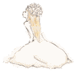

2015/0223Mon黒と白の表情
3rd Year Birthday Live
無事駆け抜けました
ありがとうございました‼︎
今回は自分の心の中で何かが
大きく動いた気がします
楽しかった〜
全身筋肉痛痛い(T . T)
3万8千人の前で踊ったり
煽ったりするのは本当に
気持ちが良くて楽しかったです！
寒い中、誰一人欠けることなく
無事乗り切れたのは
本当に嬉しいことです。
今思い出しただけで泣けるくらい
みんなが精一杯頑張りました
素晴らしいライブになれたのは
ファンの皆様のおかげだとも
思ってます。
寒い中本当にありがとうございました！
私のタオルとかうちわを
見つけるとやっぱり元気がでて
少しでも私を見てくれてる人が
いるって感じられて
頑張ろうと思いました✨
今回私のグッズに完売が出たり
タオルやうちわが今まで以上に
多くてすごく嬉しかった♪
ライブでの元気が貰えました！
755でも応援やじコメありがとう！
お花も綺麗でした。素敵‼︎
ありがとうございました(>_<)♡
写真は撮る時間がなくて...
皆さんに見せられないのが
悔しい〜
そして研究生の昇格発表。
いきなりでびっくりしました
話を振られた時、感極まり
声が出ませんでした。
ごめんなさい...
みんなに支えてもらうばかりで
なかなか結果が出せなかったり
握手会でも話そうと思った
ことがなかなか言えなかったり
そろそろこんな私を
飽きてくるのではないかとか
ずっと不安でした
"研究生打破"が私の目標でしたが
これからが私のスタートなんだな
と思ってます。
諦めず前に進みます。
だから皆さんこれからも
よろしくお願いします
今回のライブは未央奈とずっと
一緒にいた気がする。
大食いシスターズ！
未央奈といると安心するの。
未央奈も
みり愛といると落ち着くって
言ってくれた〜♡
昇格祝いに高山さんが
足に貼るカイロをくれました♡笑
高「みり愛ちゃん昇格祝いに！」
渡「なんですか？」
高「これ本当温かいから！」
渡「(´･Д･)」
使いまーすo(^▽^)o
2月19日に姪っ子が誕生しました！
甥っ子しかいなかったから
初女の子！
人のお腹の中からまた違う命が
産まれるって凄いことだよね...
手を握ってくれた(^ ^)


3日 るかさん
6日 バブさん
13日 さゆみさん
みちょさん
14日 かるちなさん
16日 はづきさん
りーあんさん
りょーさん
17日 IDOL▲ TRAPさん
れみちゃん
19日 冷えピタさん
しんご(17)さん
20日 萌菜さん
21日 わたろーさん
あやみんさん
22日 つかぴょんさん
ぷんちさん
23日 みゆりんさん
たっちゃんさん
24日 マナブゥーさん
れいれいさん
まいさん
28日 ハル坊さん
じゅんはんさん
あおいさん
ふにゃりんさん
万理華さん♡橋本さん♡ちはるさん
お誕生日おめでとうございます！
また見てね
みり愛
2015/0217Tueこけしのパラリエ
西武ドームはどんだけ寒いんだろう...
と日々考えてます
来る方は風邪ひかないように
万全の準備でお越しください(>_<)
カイロ、厚着絶対‼︎
京都でのスペシャル握手会。
4部は制服のマネキン
5部はガールズルール白衣装
制服のマネキン好き( ^ω^ )
セーラー服好き( ^ω^ )
あ、そうそうこの握手会の合間には
のぎ天の生配信が行われてました‼︎
楽しかったー♪
リアルタイムってなんかいいですね笑
またやりたいなーと
思ってます(^-^)/
ガールズルール白衣装は
恥ずかしくて撮ってない( ^ω^ )
なんで着たんだ‼︎って
突っ込んだ貴方は正解。
デコ出しー笑
こないだいおりんぬと久々に
お出掛けしてきました
ちょっと豪華なお店でご飯を
たくさん食べて幸せでした♡
また行こうね。
今日も１日頑張りましょう！
みり愛
2015/0211Wed屋上のカーテン
UTB+発売中です‼︎
まなったんと2人で出させて
いただきました。
普通の女の子になったり
魔女と猫になったりと
凄く楽しい撮影になりました♪
スタッフさんも優しくて
素の表情で撮れた気がします
ありがとうございました✨
「ハッピーセット」
まなったんと私のコンビ名
結構前からあります
皆様覚えてお帰りください。
「おっ」
「おっと？」
↓
↓
魔女ったんとみり猫
ぜひご覧ください(二度目
まなったん本当に優しいのです。
大好きです♡
こないだは握手会！
二日目
4部
ワンピース:snidel
くつ:titty&Co.
5部
5部の服忘れたー笑
この日は皆様にお見せするのは
初？のおでこちょい出し。
どうでしたか？(´･Д･)」
5部では安定の高めツイン‼︎
やはり皆様こちらになると
安心感があったみたい
今日のブログはまなったん尽くし
みりり委員会


2/1 梨乃さん
ありささん
/3 アニキさん
たかひーさん
/4 ゆりたんさん
/5 関スンさん
みり▷◁♡さん
/6 はず(=ﾟωﾟ)ﾉきさん
/7 浦安てぃんさん
/9 ノブ.深川教会の仙人さん
ももかさん
/11 福ちゃんさん
/12 リン助.みりり委員会No.666
/13 直人さん
むらってぃーさん
マキch@さん
/17 やまだまんさん
/19 ゆっき〜の！さん
YSさん
/20 うどんさん
/22 みかこーらさん
/26 たいすけさん
(不明) なこさん
砂漠の隠者フランソワさん
ホリケンさん
また見てね
みり愛
2015/0207Sat赤い靴を履かせて
みなみさんお誕生日
おめでとうございます♡
ケーキを嬉しそうに食べてる
みなみさんが可愛かったです。
写真撮るときとかもいつも
笑顔でいいよー♡とか
優しくしてくれて嬉しいです
ありがとうございます♪
そんなこんなで7.8日と握手会‼︎
2日連続で皆様に会えるとは...
1部
生まれたままでの歌衣装
私個人的にデザインとか
1番好きな衣装！
着れる機会があってよかった♪
2部
ピンクしか着たことなかったので
大好きな黄色が着れて嬉しい。
好評でした♪
3部
ずっと着てみたかった‼︎
皆様の前での肩出し衣装は
初かもしれない...
今回はいろんな事がありました
たくさん写真貼りますね
安定のいおりんぬとみりりんぬ
未央奈とお揃いにしました♡
花奈さんとラブラブ♡
撮影:ひなちまさん
井上さんと遊ぶ その1
井上さんと遊ぶ その2
今回2回も衣装がお揃いになって
運命的でした‼︎
チョコレートフォンデュで
喜ぶ渡辺。
兄貴。
七瀬さん♡
なんだかメンバーのみんなと
お揃いにしたり遊んだりで
すごく楽しめました✨
そして握手会が終わった後は
優里さんとリベンジ。
チョコレートバー‼︎
終始テンションが高くて
お互いずっと笑ってました
優里さんはずっと寒い寒い
言ってました♡笑
いろんな話出来たし、
リベンジ果たせたし、
楽しかったです‼︎
また行きましょうね♪
また見てね
みり愛
2015/0204Wed冠の似合う娘
最近映画をよく観るようになりました
私が一番心が惹かれて
何度も何度も見返した映画は
シザーハンズ。
切ない恋に泣けます(>_<)
特に好きなシーンは
雪の中少女が舞うところが
好きです。
おすすめの映画とかありますか？
あと、握手会がありました！
列、凄かった((((；ﾟДﾟ)))))))
たくさんの方((((；ﾟДﾟ)))))))
楽しかった((((；ﾟДﾟ)))))))
猫の髪型でお願いします
ってヘアメイクさんに言ったら
「今日猫多いね〜」って
言ってたのでえー？と思ったら
ちはるさんも黒猫でした♡笑
写真撮りたかった...
残念。
どわ
橋本さんとひなちまさんの生誕祭
参加したかったですo(｀ω´ )o
どわ
ひなちまさんお誕生日おめでとうございます。
いつも握手会終わりとか
ライブ終わりのケータリングの前で
残ってるお菓子をたくさん
コートのポケットに入れて
えへへ♡と言っているひなちまさん
が可愛すぎます。笑
でもお互い常習犯ですね♡笑
どわ
会うと必ず今日は何を食べたかを
報告し合います
食いしん坊シスターズです。
◎告知◎
・乃木坂46SHOW! お説教部屋
私、佐々木、寺田の3人で
出させてもらってます！
ぜひご覧ください
・UTB+ 2月9日発売
まなったんと撮影させて
いただきました
こちらもまたぜひご覧ください
見せたことない姿が見れるかも...
まなったんらぶです♡
あ、あともう一個映画で好きなのは
フラガール。
松雪泰子さん主演のフラダンスの
映画っっ
観た事ある方いますか？
あれをきっかけにフラダンス
やりたくなった！
でもバレエやってたので断念。
バレエもフラダンスも似てるので
いい勉強になりました
素晴らしい映画！どわ
ではまたっっ
みり愛